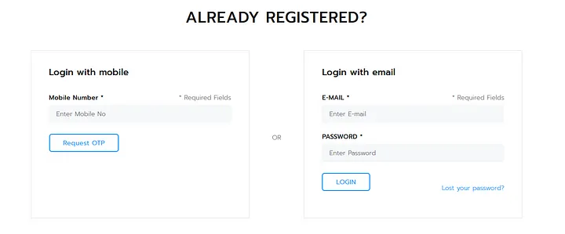
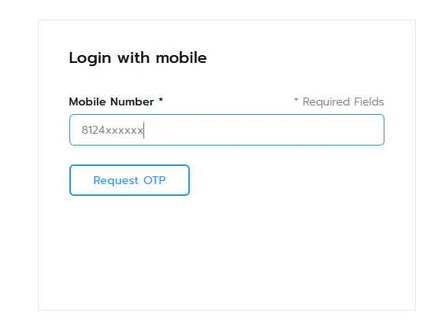
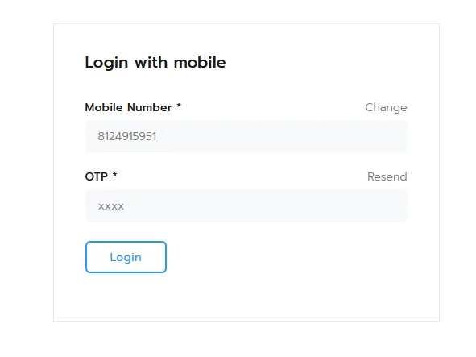
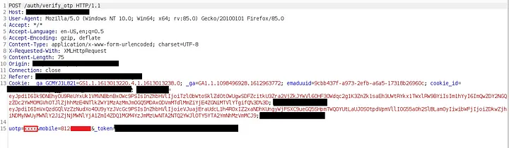
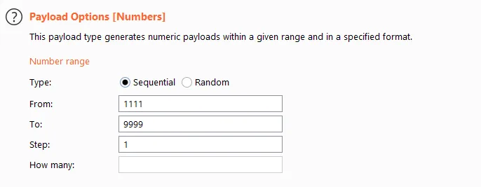
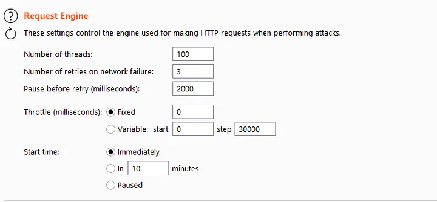
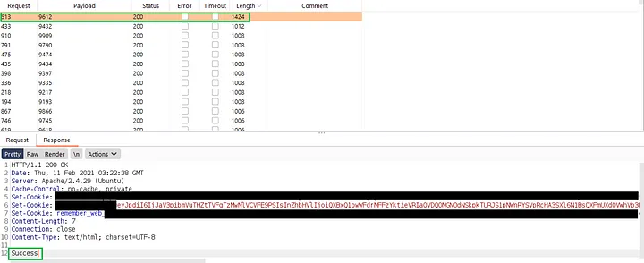
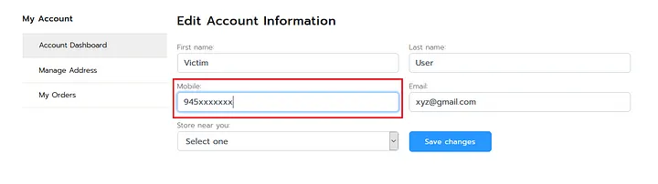
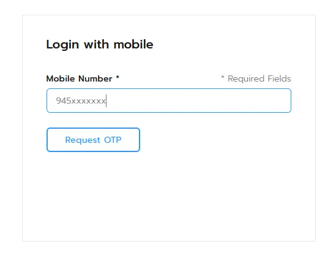
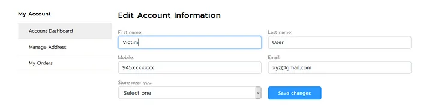

Take over user accounts by abusing improper rate limitation.

Ever since I embarked on my hacking journey, my primary objective has been to enhance internet security. A while ago, I conducted some Google Dorks search and stumbled upon a responsible disclosure program, which became my target for the week. I wasted no time and began my hacking efforts on it.
For Google Dorks
Let's consider the target as target.com, an online e-commerce store similar to Amazon and Flipkart. I initiated my exploration by employing one of my favorite tools, Subfinder, to discover subdomains. I discovered a subdomain, shop.target.com, which appeared to be an online shopping platform.
I promptly visited the URL, registered an account, and proceeded to explore the sign-in features provided by the application. The application offered two options for signing in:
- Signing in with a mobile number, where a 4-digit OTP is sent for verification.
- Signing in with an email and password.

To assess the presence of rate limiting implementation or the possibility of brute-forcing OTP codes, I opted to sign in with a mobile number. Since the application utilized a 4-digit OTP for verification, I anticipated that brute-forcing the codes would be relatively straightforward.

I requested an OTP for my registered mobile number and entered random codes into the OTP input field. I intercepted the request using the Burp Suite proxy tool.

I redirected the intercepted OTP verification request to the Intruder tool in Burp Suite.

I configured the Intruder payload and threads for the brute-force attack.

For the payload options, I selected "Number" and set the range to start from 1111. This choice was based on my observation that the application did not send OTP codes starting with zeroes. By starting from ones, I could minimize the time required for brute-forcing.

I set the number of threads to 100 and initiated the attack.

Since every response was configured to result in a 200 OK response code, I decided to check the length of the response. Some responses had a length of 1424, which indicated success.
I entered the OTP in the intercepted request, sent it, and the codes still worked. It became evident that the application lacked rate limiting functionality, and each time an OTP was requested, the same OTP could be used until it was validated. As a result, I was able to take over users' accounts.
However, brute-forcing OTP codes to take over user accounts is not a viable method all the time. I devised a plan to fully compromise victim accounts. I accessed my own account, changed the victim's mobile number to my own, and saved the changes.

Interestingly, there was no verification step when updating the mobile or email ID associated with an account. This meant that I could simply brute-force the OTP and log in to the victim's account, subsequently changing the mobile number or email ID to one I controlled.
I swiftly logged out and attempted to log in using my own mobile number to verify if the changes I made earlier were successful.

To my surprise, I received a 4-digit OTP from the application, which I entered to log in to the victim's account without any additional verifications.

Thank you for reading.
For more updates and insights, follow me on Twitter: @thevillagehacker.